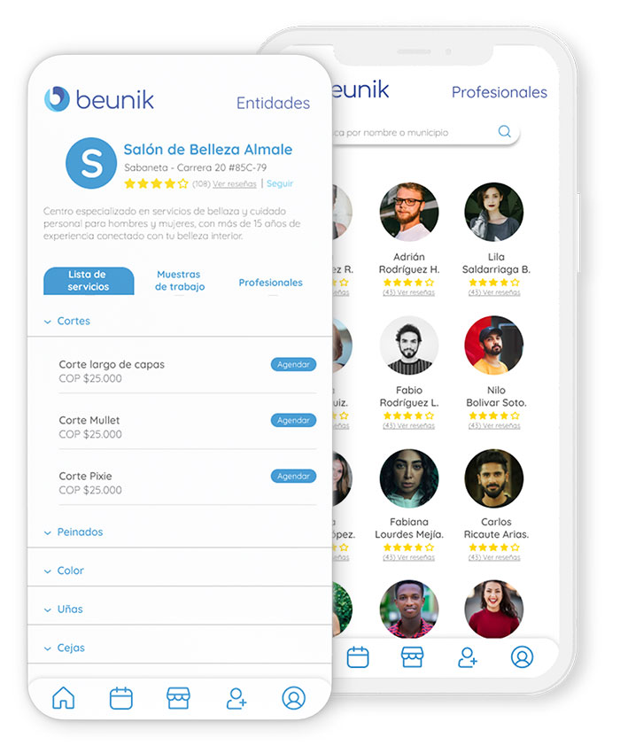
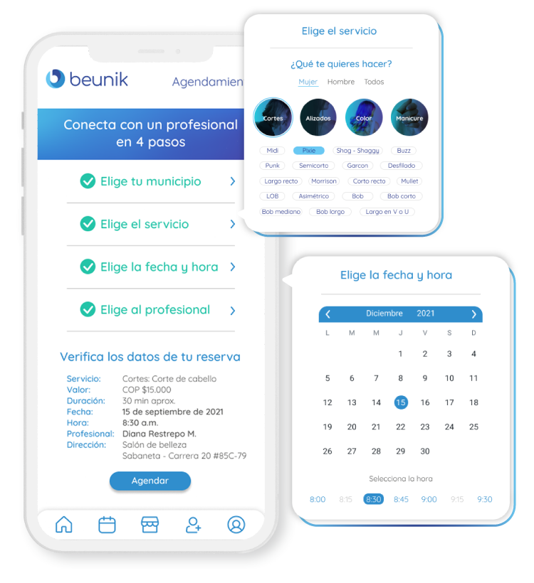

Un catálogo completo con muestras de trabajo reales
realizadas por salones de belleza y barberías que te inspirarán
Mira el perfil de cada profesional, salón de belleza o barbería con toda la información y reseñas validadas para que tomes la mejor decisión.

Una agenda que se ajusta a tus tiempos. Reserva y separa la cita con tu profesional directamente y sin complicaciones.

Comenta y reseña, permite que otros tomen la mejor
decisión a través de tu experiencia y tu recomendación.